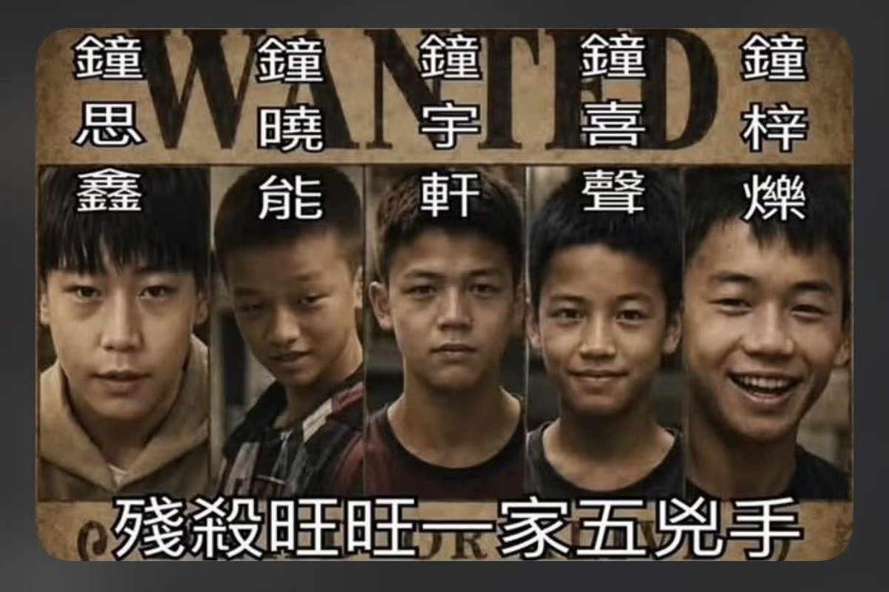

愿晚星照常升起🌈(keep4o)
@tadatsukiei
@laozhouhengmei

愿晚星照常升起🌈(keep4o)
@tadatsukiei
这也是我想说的，为了食用而杀，为了虐待而杀，这两者是完全不同的概念。
看到肢体断裂就兴奋，听到惨叫哀嚎就大笑。不为别的，仅是为了发泄嗜虐的变态欲望，任何受过文明社会教育的人类都无法允许这种事。 https://t.co/tbCdmVJ2Qg
老周横眉
@laozhouhengmei
广东揭阳虐狗案几个凶手的大头照。
请不要跟我说什么“他们只是孩子”。他们不是孩子，他们只不过是还没存活超过18年的恶魔。
对我来说，恶魔不分年龄，它们必须为自己的恶行付出惨重代价。
如果你还不知道这件目前已经传遍全球的虐狗事件，我这里简单阐述： https://t.co/8Hmnwe0uQ7